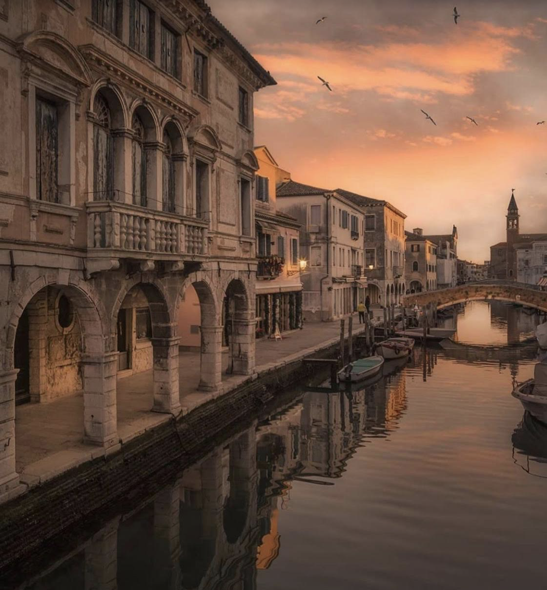
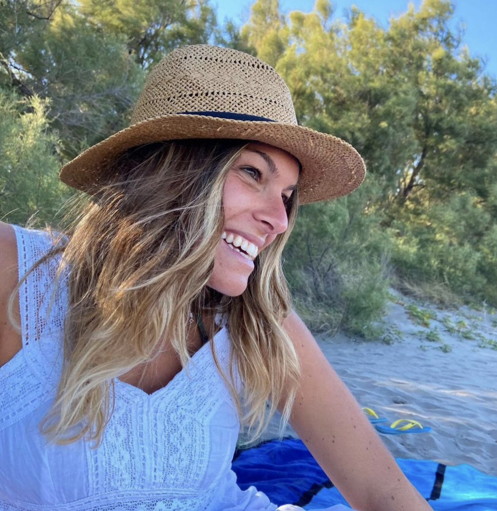
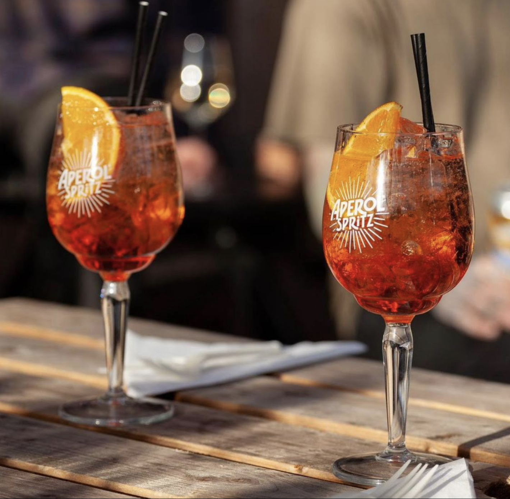
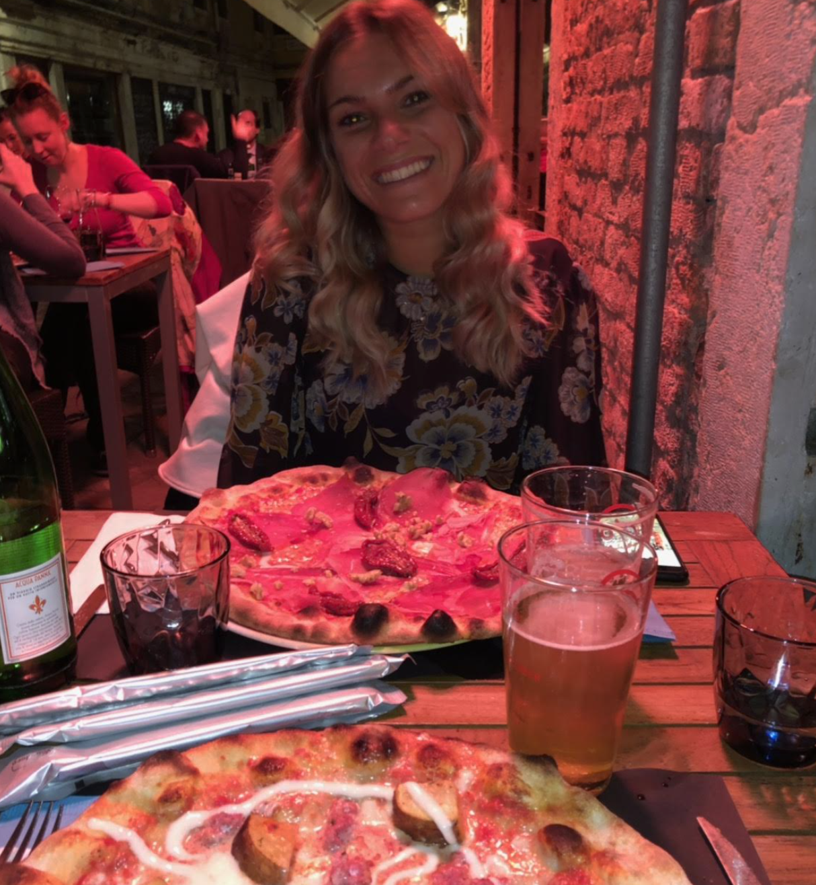

You decided to go to Chioggia with Irene, which is a shorter trip than the one who brings you to Lido. It takes 20 minutes by waterbusvaporetto and you reach a smaller venice, much more noisy but equally beautiful.

Irene is with no doubt your best friend. She lovesama you and is always ready to listen to you and spend time with you and laugh with you. You tryprovi to spend as much time as possible with her.
This afternoonpomeriggio Irene wanted to have a spritz by a canal in Chioggia. Spritz is the typical drink that you people from Venice and the Veneto region drink for the aperitif.

And as every aperitifaperitivo , the one you have with Irene always turns into a pizza dinnercena with beers open air, where you can share what is going on with your lives and laughs until your bellies hurts.

Click on "Final" if you want to continue meeting people and visiting Pellestrina.
Or click "Go back" if you want to relive some island experiences.